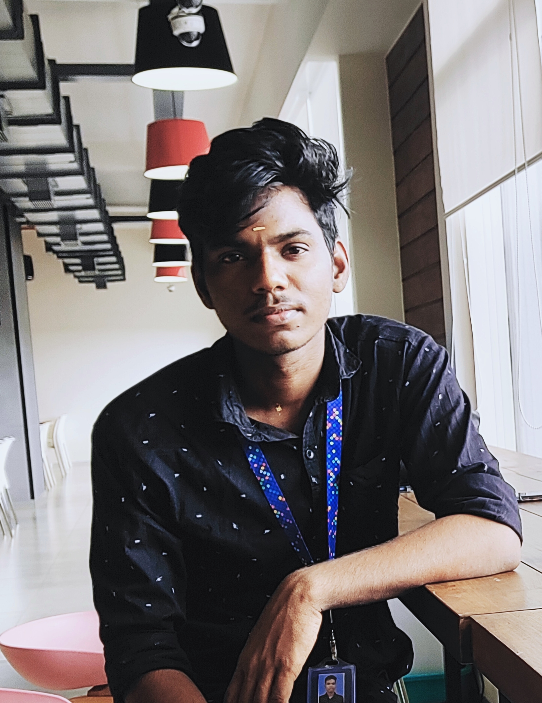

portfolio

About my self
- Iam balaji and .iam from villupuram
- I am did my diploma at central polytecnic college chennai,in electronics communication engineering
- I am 19 year old
- I am good at drawing
- I like cook biriyani.
- I am very honest boy.
My favourite food
- My favourite food is Chicken Biryani. It is served with gravy and raita.
- It is a flavourful dish that has a rich taste.
- It is a famous Indian subcontinent dish that is popular around the world.
- Biryani is prepared from basmati rice mixed with several spices and cooked in a special way.
- Chicken Biryani, Mutton Biryani and Veg Biryani are some of the variants of this delicious dish.
- This dish is my favourite because it has a lip-smacking flavour, and I love to eat it at least once a week.
- I am prepares very tasty and delicious biryani.
- I am cooks the dish during weekends or on special occasions.
- Biryani is one such mouth-watering dish that is enjoyed by people along with their family and friends
My hobby drawing
- I do my hobby in my spare time.
- I have many hobbies like listening music, studying, etc.
- But drawing is my favorite hobby.
- I like to make drawing of different things.
- When I do drawing, I lost in doing it.
- In the beginning, I wasn't able to do drawing properly.
- But now, my drawing is very good.
My future in drawing
I will try to continue my drawing skills in the future also. I am learning more skills related to painting. I am currently focusing on graphic designing and doodling. The world is moving towards digitalization. That is the reason I am trying my hands there too. There is many things to learn from now. I am looking forward to doing that. Moreover, I am very excited.